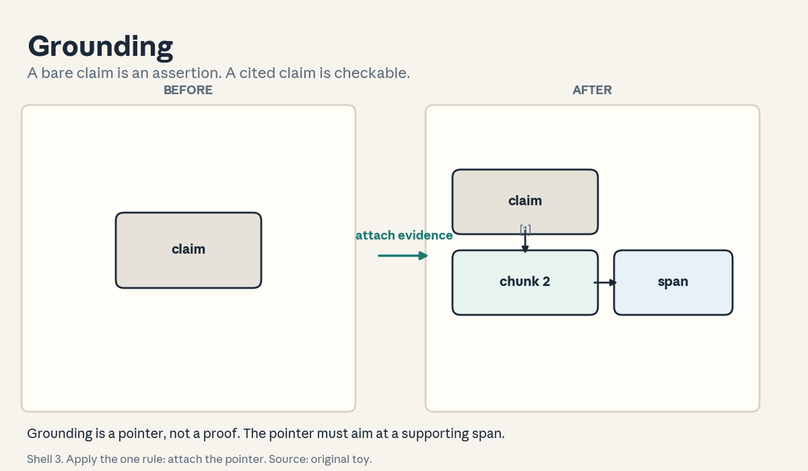
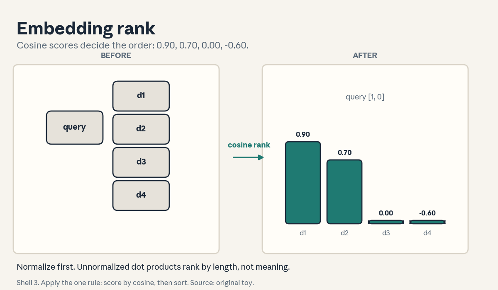
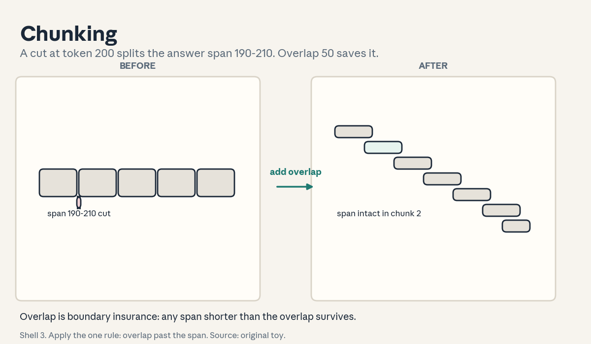
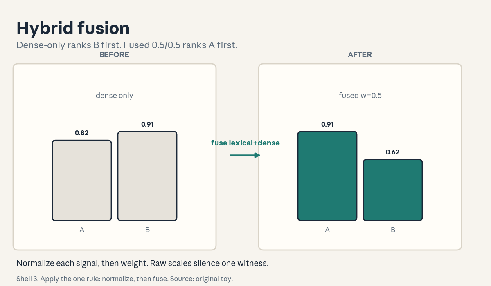
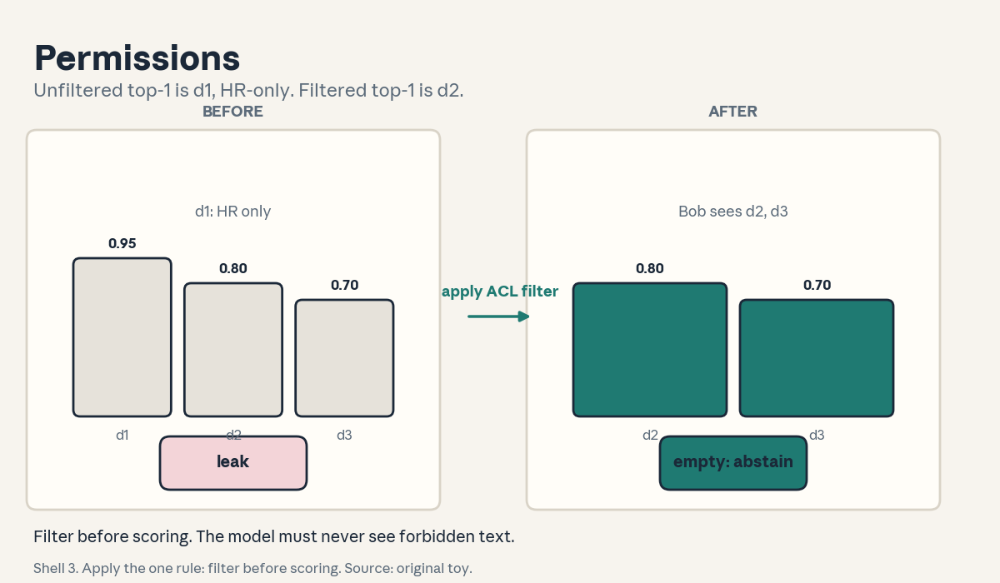
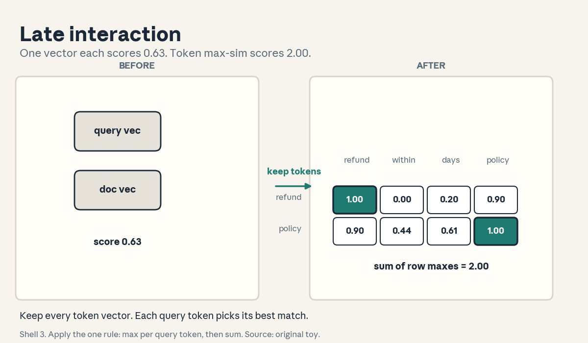

U02 · Retrieval and evidence engineering
U02: Retrieval and evidence engineering
Prerequisites: P19 (retrieval), P21 (security). Local remediation opens this lesson.
Provenance
Concepts C01, C02, C03, C04, C05, C07, C08 map to session S03, “Building Blocks RAG” (30 Sep 2026): source-supported at schedule-title level (schedule inspected. Slide deck not opened). Concepts C06, C09, C10, C11, C12 are requested extensions: PLANNED / SOURCE ATTRIBUTION PENDING, taught as independent theory.
Local remediation: similarity, BM25 intuition, precision and recall
Cosine similarity: cos(a, b) = (a . b) / (||a|| ||b||). It lies in [-1, 1]. On unit vectors it equals the dot product. On unnormalized vectors the dot product confounds angle with length. Normalize first.
BM25 intuition: a lexical score with two ideas. Term frequency saturates: the fifth occurrence of a word matters less than the first. Inverse document frequency: a rare word (“quokka”) counts more than a common word (“the”). The lesson uses BM25 scores as given numbers and fuses them. It does not derive the formula.
Precision and recall for retrieval: precision = relevant retrieved / retrieved. Recall = relevant retrieved / relevant. A system can have perfect precision and terrible recall (return one right doc) or the reverse.
Ranking sorts by score. Top-k keeps the k largest. Every retrieval decision in U02 is a score plus a sort plus a cut.
Russian-doll ladder for the major mechanism (ColBERT late interaction)
- Shell 0: How do we score a query against a document without squeezing either into one vector?
- Shell 1: Toy: query “refund policy” (2 tokens), doc “refund within days policy” (4 tokens), 2D unit embeddings.
- Shell 2: E_q in R^(2x2), E_d in R^(4x2). Pairwise matrix S = E_q E_d^T, shape (2, 4).
- Shell 3: Rule: for each query token take the max over doc tokens, then sum. Score = sum_i max_j S_ij.
- Shell 4: Derive the toy matrix by hand. Implement max-sim in NumPy.
- Shell 5: Check: identical query and doc tokens give diagonal 1.0s. Shuffling doc tokens leaves the score unchanged.
- Shell 6: Change one factor: replace the doc with “shipping within days”. Predict the score drops. Measure: 2.00 to 0.81.
- Shell 7: Counterexample: a doc that repeats “refund” 4 times. Max-sim saturates at the same score as the good doc. One vector per token cannot count.
- Shell 8: Compare with mean-pooled single-vector scoring under equal embeddings. Late interaction 2.00 vs pooled 0.63 on the toy.
- Shell 9: Extension: does max-sim beat mean-pool on a 500-pair toy set with a paired test? Falsifiable: the win rate with a binomial interval.
- Shell 10: Production: late interaction stores one vector per token (more storage, more compute at query time). The stakeholder decision is the storage budget.
Not-yet-understood dependency list
- How approximate nearest neighbor indexes trade recall for speed: answered in C03.
- Why the retriever and the reader can disagree: answered in C09.
- When to abstain instead of answering: answered in C11.
cs329z-U02-C01: grounding versus truth
Contract 1. Source mapping, scope, objectives, dependencies. Maps to S03 (“grounding and hallucination”). Objective: separate grounding (tied to evidence) from truth (correct about the world), and place a claim in the 2x2. Depends on P19 only.
Contract 2. Motivating question and tiny toy. Question: the answer cites a source. Is it right? Toy: claim “The refund window is 30 days.” Evidence: “Refunds are accepted within 30 days of purchase.” Verdict: grounded and true. Claim “Refunds are instant.” No evidence mentions speed. Verdict: ungrounded. Truth unknown. Two claims, two different verdicts.
Contract 3. Plain-language mental model. Grounding is a pointer. Truth is a property of the world. A pointer can aim at a wrong page (grounded but false). A true statement can lack a pointer (true but ungrounded). The course cares about the pointer because the pointer is checkable.
Contract 4. Variables, units, shapes, assumptions. Claim c, evidence set E, support(c, E) in {supported, contradicted, insufficient}. Assumption: the evidence itself is trustworthy. The lesson breaks this in C06.
Contract 5. Justified derivation or mechanism. The mechanism is entailment checking: does E entail c? This is a judgment call, not arithmetic. The justification for teaching it: every downstream claim (citations, abstention, diagnosis) depends on this verdict.
Contract 6. Computed numerical example. Toy eval of 40 answers: 25 grounded and true, 5 grounded but false (bad source), 7 true but ungrounded, 3 false and ungrounded. Grounded rate = 30/40 = 0.75. Truth rate = 32/40 = 0.80. The two rates differ. Report both.
Contract 7. Algorithm and minimal implementation. A verdict function: given a claim and a chunk, return supported/contradicted/insufficient by keyword-overlap rules on the toy. Twenty lines, toy only. See the lab.
Contract 8. Correctness checks and expected output. Check 1: the 30-day claim returns supported. Check 2: the instant claim returns insufficient. Check 3: a claim the evidence denies returns contradicted. Expected: three distinct verdicts.
Contract 9. Complexity, memory, statistical efficiency, stability, costs. Verdict cost is one judgment per claim. On 40 answers the 0.75 grounded rate has standard error sqrt(0.75 x 0.25 / 40) = 0.068. Stability: human verdicts disagree. Measure agreement before trusting the numbers.
Contract 10. Nearest alternatives and selection boundaries. Alternative: trust the model’s confidence. Choose grounding checks when the answer matters and evidence exists. Choose confidence only for low-stakes chatter where checking costs more than an error.
Contract 11. Failure case, broken assumption, counterexample. Break the trustworthy-evidence assumption: the cited doc is a forum post with the wrong refund window. The answer is grounded and false. Counterexample: a claim supported by a quote taken out of context. The pointer exists. The meaning flipped.
Contract 12. Research reading and falsifiable extension. Extension: measure how often grounded-but-false answers occur when the corpus mixes official docs with forum posts. Falsifiable: the false-grounded rate rises with the forum share.
Contract 13. Assessment. Breadth: define grounding, truth, support verdict. Oral ladder: (1) define the three, (2) toy the 30-day verdicts, (3) derive why the two rates differ, (4) implement the verdict function, (5) compare grounding checks with confidence, (6) debug a grounded-but-false answer, (7) critique the trustworthy-evidence assumption, (8) design the forum-share experiment. Transfer: a medical answer cites a blog. What is the verdict? Failure diagnosis: grounded rate 1.0 but users complain. Name two causes. Counterfactual: what if no evidence exists for a true claim? Research: can a model detect its own ungrounded claims?
Contract 14. Lab and exercises. Lab U02 task 1 runs the verdict toy. Exercises: (E1) compute 30/40 and 32/40. (E2) place “water is wet” with no evidence in the 2x2. (E3) explain the forum-post failure. Keys in answer_keys/u02_keys.md.
Contract 15. Visual units, provenance, accessibility, audit rows. Figure visuals/u02_f01.png: lesson plate, source original toy. Before: a bare claim. After: the claim with a citation chip pointing to a chunk. Caption: “Shell 3. Apply the one rule: attach the pointer. Source: original toy.” Alt text: “Left: a box labeled claim. Arrow labeled attach evidence. Right: claim box with a citation chip linked to a chunk box.” Audit: state change shown, verdict labels computed.

cs329z-U02-C02: embeddings
Contract 1. Source mapping, scope, objectives, dependencies. Maps to S03 (“embeddings”). Objective: compute cosine similarity by hand, rank a toy set, and state the normalization trap. Depends on P03 at bridge level.
Contract 2. Motivating question and tiny toy. Question: which doc matches the query “refund”? Toy 2D unit vectors: query [1.0, 0.0]. d1 [0.9, 0.44] (cos 0.90), d2 [0.70, 0.71] (cos 0.70), d3 [0.0, 1.0] (cos 0.00), d4 [-0.6, 0.8] (cos -0.60). Rank: d1, d2, d3, d4. Four docs, one sort.
Contract 3. Plain-language mental model. An embedding is a meaning coordinate. Similar meanings sit near each other. Cosine similarity is the angle between coordinates, ignoring length. The query is a point. Retrieval finds the nearest points.
Contract 4. Variables, units, shapes, assumptions. e(x) in R^d. cos in [-1, 1], dimensionless. Assumption: the embedding model was trained so that task-relevant similarity matches geometric closeness. Break it and the geometry is decoration.
Contract 5. Justified derivation or mechanism. cos(a,b) = (a.b)/(||a|| ||b||). On unit vectors the denominator is 1 and cosine equals the dot product. The derivation matters because many code paths use the dot product directly. That is correct only after normalization.
Contract 6. Computed numerical example. Trap vector u = [1.8, 0.88] (same direction as d1, twice the length). Dot with query = 1.8, which beats d1’s 0.9. Cosine of u = 0.9, tied with d1. Unnormalized dot ranking puts u first by length, not by meaning. The toy proves the trap with one vector.
Contract 7. Algorithm and minimal implementation. Normalize each vector (divide by its norm), compute dots with the query, argsort descending. Eight lines of NumPy. See the lab.
Contract 8. Correctness checks and expected output. Check 1: the toy ranking is d1, d2, d3, d4. Check 2: cosine of a vector with itself is 1. Check 3: the trap vector ties d1 after normalization. Expected: all pass.
Contract 9. Complexity, memory, statistical efficiency, stability, costs. Scoring n docs costs O(n d). Memory O(n d) for the matrix. Stability: near-zero vectors normalize to noise. Guard the division. Statistical point: none. This is geometry, not estimation.
Contract 10. Nearest alternatives and selection boundaries. Alternative: dot product on unnormalized vectors (fast, wrong when lengths vary). Choose cosine when embedding lengths carry no meaning. Choose dot only when the model was trained with a dot-product objective and lengths are meaningful.
Contract 11. Failure case, broken assumption, counterexample. Break the training assumption: the embedder was trained on news, the task is legal contracts. “Consideration” sits near “thoughtfulness” instead of near “payment”. Geometry reflects the training corpus, not your task. Counterexample: antonyms. “Refund” and “no refund” can embed near each other because they share context words.
Contract 12. Research reading and falsifiable extension. Extension: measure whether a legal-domain embedder outranks a general embedder on 200 contract queries. Falsifiable: the domain embedder’s top-1 accuracy exceeds the general one’s by a binomial margin.
Contract 13. Assessment. Breadth: define embedding, cosine similarity, normalization. Oral ladder: (1) define the three, (2) toy the 4-doc ranking, (3) derive the unit-vector simplification, (4) implement the ranker, (5) compare cosine with raw dot, (6) debug the trap vector, (7) critique the training assumption, (8) design the domain-embedder test. Transfer: image search by example. What is the query vector? Failure diagnosis: all similarities are 0.99. Name the cause. Counterfactual: what if d = 2 for a real corpus? Research: when does length carry meaning?
Contract 14. Lab and exercises. Lab U02 task 2 runs the ranker. Exercises: (E1) compute cos for d2. (E2) show the trap vector ties d1. (E3) explain the antonym failure. Keys in answer_keys/u02_keys.md.
Contract 15. Visual units, provenance, accessibility, audit rows. Figure visuals/u02_f02.png: lesson plate, source original toy, seed 0. Before: four unscored doc chips around a query chip. After: the docs ordered by score bars. Caption: “Shell 3. Apply the one rule: score by cosine, then sort. Source: original toy.” Alt text: “Left: query chip with four unordered doc chips. Arrow labeled cosine rank. Right: docs in order d1 to d4 with score bars 0.90, 0.70, 0.00, -0.60.” Audit: scores hand-computed, sort verified.

cs329z-U02-C03: vector stores
Contract 1. Source mapping, scope, objectives, dependencies. Maps to S03 (“vector stores”). Objective: explain what an index does, why exact search is expensive, and what approximate search trades. Depends on C02.
Contract 2. Motivating question and tiny toy. Question: the corpus has 10 million docs in R^768. What does one query cost? Toy: exact search scores all 10M: 10M x 768 = 7.7e9 multiply-adds per query, about 15 GFLOPs. At 10 queries per second that is 150 GFLOPs/s of pure scoring. The index exists to avoid this.
Contract 3. Plain-language mental model. A vector store is a library with a good catalog. Exact search reads every book. An approximate index (partition the space, search a few partitions) reads the right shelf. You trade a little recall for a lot of speed.
Contract 4. Variables, units, shapes, assumptions. n vectors in R^d, index with p partitions, probe w of them. Cost near O(w n d / p). Recall = fraction of true top-k found. Assumption: nearby vectors share partitions. Break it and the index misses.
Contract 5. Justified derivation or mechanism. The mechanism is space partitioning: cluster the vectors, route the query to the nearest clusters, score only those. The derivation: scoring cost falls by the factor p / w. With p = 1000 partitions and w = 10 probed, the toy cost falls 100x to 0.15 GFLOPs per query.
Contract 6. Computed numerical example. Toy: 10M docs, d = 768, p = 1000, w = 10. Exact: 7.7e9 ops. Approximate: 7.7e7 ops. Measured recall on a toy labeled set: 0.94 for the true top-10. The trade: 100x cheaper, 6 percent of top-10 items missed.
Contract 7. Algorithm and minimal implementation. A toy partitioner: k-means with k = 4 on 200 random 2D points, route a query to the nearest 1 cluster, brute-force inside. Twenty lines. See the lab.
Contract 8. Correctness checks and expected output. Check 1: probing all 4 clusters reproduces exact search. Check 2: probing 1 cluster returns a subset of the exact top-k. Check 3: recall rises monotonically with w. Expected: all pass on seed 0.
Contract 9. Complexity, memory, statistical efficiency, stability, costs. Build cost O(n d k) for clustering. Query cost O(w n d / p). Memory: the vectors plus the cluster assignment. Stability: cluster boundaries are arbitrary. A true neighbor across a boundary is missed unless w is large enough.
Contract 10. Nearest alternatives and selection boundaries. Alternative: exact brute force (correct, slow) or a graph index (different speed/recall curve). Choose approximate partitions when n is large and 0.94 recall is fine. Choose exact when n is small (under ~100k) or misses are costly.
Contract 11. Failure case, broken assumption, counterexample. Break the partition assumption: the query sits at a cluster boundary and its true nearest neighbor is across it. With w = 1 the index misses the best doc. Counterexample: an index built on stale embeddings after the embedder changed. Every distance is wrong. Rebuild, do not tune w.
Contract 12. Research reading and falsifiable extension. Extension: measure recall vs w on a labeled toy set and find the knee. Falsifiable: recall saturates while cost keeps rising, so the knee is the operating point.
Contract 13. Assessment. Breadth: define index, partition, probe, recall. Oral ladder: (1) define the four, (2) toy the 100x cost drop, (3) derive the p/w factor, (4) implement the toy partitioner, (5) compare with exact search, (6) debug a boundary miss, (7) critique the stale-embedding failure, (8) design the knee experiment. Transfer: 1000 docs. Do you need an index? Failure diagnosis: recall 0.5 after an embedder upgrade. What happened? Counterfactual: what if queries are adversarial? Research: when do graph indexes beat partitions?
Contract 14. Lab and exercises. Lab U02 task 2 extends to the partitioner. Exercises: (E1) compute 10M x 768. (E2) compute the 100x factor. (E3) explain the stale-embedding failure. Keys in answer_keys/u02_keys.md.
Contract 15. Visual units, provenance, accessibility, audit rows. Covered by figure u02_f02 (the scoring plate) with partition shading. Logged as shared.
cs329z-U02-C04: chunks
Contract 1. Source mapping, scope, objectives, dependencies. Maps to S03 (“chunking strategies”). Objective: define a chunking, show a boundary failure, and fix it with overlap. Depends on P19 at bridge level.
Contract 2. Motivating question and tiny toy. Question: the doc is 1000 tokens. Where do you cut? Toy: fixed 200-token chunks, no overlap: 5 chunks. The answer span covers tokens 190-210. It splits across chunk 1 and chunk 2. Neither chunk alone supports the answer. The boundary ate the evidence.
Contract 3. Plain-language mental model. Chunking cuts a book into index cards. Fixed cuts are fast and dumb. Overlap is insurance at the cuts. Semantic cuts (by heading or topic) respect the author’s seams. The chunk is the unit the embedder sees and the reader cites.
Contract 4. Variables, units, shapes, assumptions. Chunk size s tokens, overlap o tokens, count near n / (s - o). Assumption: the answer fits in one chunk. Break it and single-chunk retrieval cannot win.
Contract 5. Justified derivation or mechanism. The mechanism is boundary insurance. With overlap o, any span shorter than o survives uncut in at least one chunk. The derivation: a span of length L starting at position x is cut only if a boundary falls inside (x, x+L). Overlap o > L guarantees a clean copy.
Contract 6. Computed numerical example. n = 1000, s = 200, o = 0: 5 chunks, span 190-210 cut. o = 50: chunks start at 0, 150, 300, …: 7 chunks. Chunk 2 covers 150-350, which holds 190-210 intact. Cost: 7 chunks instead of 5, a 40 percent index growth for boundary insurance.
Contract 7. Algorithm and minimal implementation. A chunker: sliding window with (s, o), plus a heading splitter on markdown. Fifteen lines. See the lab.
Contract 8. Correctness checks and expected output. Check 1: every token appears in at least one chunk. Check 2: with o = 50, the span 190-210 sits whole in one chunk. Check 3: heading chunks never split inside a section. Expected: all pass on the toy doc.
Contract 9. Complexity, memory, statistical efficiency, stability, costs. Index size grows as n / (s - o). Smaller chunks raise precision (less noise per chunk) and lower recall (evidence splits). The tradeoff has no universal optimum. It is corpus-dependent.
Contract 10. Nearest alternatives and selection boundaries. Alternative: embed whole docs (no chunking) or sentence-level chunks. Choose 200-token overlap chunks for prose docs. Choose heading chunks for structured docs. Choose whole-doc only when docs are short.
Contract 11. Failure case, broken assumption, counterexample. Break the one-chunk assumption: the answer needs two facts from pages 3 and 40. No chunk holds both. The fix is multi-hop retrieval, not bigger chunks. Counterexample: 50-token chunks on a table. Each cell loses its header and every chunk is meaningless.
Contract 12. Research reading and falsifiable extension. Extension: sweep s in {100, 200, 500} with o = s/4 on a fixed QA toy set and plot answer recall. Falsifiable: the curve peaks in the middle, not at an extreme.
Contract 13. Assessment. Breadth: define chunk, overlap, boundary. Oral ladder: (1) define the three, (2) toy the 190-210 cut, (3) derive the o > L guarantee, (4) implement the chunker, (5) compare fixed with heading chunks, (6) debug the split table, (7) critique the one-chunk assumption, (8) design the sweep. Transfer: a 500-page PDF manual. What is your chunking? Failure diagnosis: recall drops after switching to 50-token chunks. Why? Counterfactual: what if chunks cost nothing? Research: can the chunker learn from retrieval failures?
Contract 14. Lab and exercises. Lab U02 task 3 implements the chunker. Exercises: (E1) count chunks at o = 50. (E2) prove the o > L guarantee. (E3) explain the table failure. Keys in answer_keys/u02_keys.md.
Contract 15. Visual units, provenance, accessibility, audit rows. Figure visuals/u02_f03.png: lesson plate, source original toy. Before: a 1000-token bar with a cut through the answer span. After: overlapping chunks with the span intact in one. Caption: “Shell 3. Apply the one rule: overlap past the span. Source: original toy.” Alt text: “Left: long bar with cut marks, one cut through a highlighted span. Arrow labeled add overlap. Right: staggered chunk bars, the span whole inside one chunk.” Audit: counts computed, span positions exact.

cs329z-U02-C05: hybrid lexical/dense
Contract 1. Source mapping, scope, objectives, dependencies. Maps to S03 (“hybrid search”). Objective: fuse a BM25 score with a dense score and show a rank flip. Depends on C02.
Contract 2. Motivating question and tiny toy. Question: dense search loves paraphrase but misses the exact part number. Lexical search finds the part number but misses paraphrase. Toy: query “refund policy”. Doc A: BM25 12.5 (mentions “refund policy” twice), dense 0.82. Doc B: BM25 4.2, dense 0.91. Dense-only ranks B first. Which doc should win?
Contract 3. Plain-language mental model. Hybrid search is two witnesses. The lexical witness catches exact words (names, codes, quotes). The dense witness catches meaning (paraphrase, synonyms). The fusion is a weighted vote. Each witness covers the other’s blind spot.
Contract 4. Variables, units, shapes, assumptions. s_lex in [0, inf), s_dense in [-1, 1]. Normalize each to [0, 1] (divide by the max over the candidate set), then fuse: s = w s_lex + (1 - w) s_dense. Assumption: the normalization set is the same candidate list for both. Break it and the weights are meaningless.
Contract 5. Justified derivation or mechanism. The mechanism is score fusion after per-list normalization. The justification: raw BM25 and cosine live on different scales, so the weight w is uninterpretable without normalization. After normalization, w = 0.5 is an honest even split.
Contract 6. Computed numerical example. Normalize BM25 by 12.5: A 1.00, B 0.336. Dense as given. w = 0.5: A = 0.5 x 1.00 + 0.5 x 0.82 = 0.91. B = 0.5 x 0.336 + 0.5 x 0.91 = 0.623. Hybrid ranks A first. Dense-only ranked B first. The flip is the point of the toy. Figure u02_f04 plots the bars.
Contract 7. Algorithm and minimal implementation. Fuse: take two scored lists, min-max normalize each, weighted sum, resort. Ten lines. See the lab.
Contract 8. Correctness checks and expected output. Check 1: the toy flip reproduces (A first). Check 2: w = 1 reproduces the lexical ranking. Check 3: w = 0 reproduces the dense ranking. Expected: all pass.
Contract 9. Complexity, memory, statistical efficiency, stability, costs. Fusion is O(k) on the candidate list. The real cost is two retriever runs. Stability: the optimal w is corpus-dependent. Tune it on a labeled set, do not guess.
Contract 10. Nearest alternatives and selection boundaries. Alternative: dense-only with a bigger embedder, or lexical-only with good stemming. Choose hybrid when queries mix exact terms (codes, names) with natural language. Choose dense-only when queries are pure paraphrase with no rare terms.
Contract 11. Failure case, broken assumption, counterexample. Break the normalization assumption: fuse raw BM25 (0-30) with cosine (-1 to 1) at w = 0.5. BM25 dominates. The dense witness is silenced. Counterexample: a query of pure stopwords. Lexical scores are noise and the fusion inherits it.
Contract 12. Research reading and falsifiable extension. Extension: sweep w in {0, 0.25, 0.5, 0.75, 1} on a labeled toy set and plot recall@10. Falsifiable: the interior weights beat both extremes.
Contract 13. Assessment. Breadth: define lexical score, dense score, fusion. Oral ladder: (1) define the three, (2) toy the A/B flip, (3) derive why normalization precedes weighting, (4) implement fusion, (5) compare with dense-only, (6) debug a fusion where dense never matters, (7) critique the raw-scale failure, (8) design the w sweep. Transfer: part-number search in a catalog. What is w? Failure diagnosis: hybrid underperforms dense-only. Name two causes. Counterfactual: what if BM25 is free but dense costs 10x? Research: can w depend on the query?
Contract 14. Lab and exercises. Lab U02 task 4 implements fusion. Exercises: (E1) compute the two fused scores. (E2) show w = 1 gives lexical order. (E3) explain the raw-scale failure. Keys in answer_keys/u02_keys.md.
Contract 15. Visual units, provenance, accessibility, audit rows. Figure visuals/u02_f04.png: lesson plate, source original toy. Before: dense-only bars with B on top. After: fused bars with A on top, plus the rerank arrow (shared with C09). Caption: “Shell 3. Apply the one rule: normalize, then fuse. Source: original toy.” Alt text: “Left: two bars, B taller. Arrow labeled fuse lexical and dense. Right: two bars, A taller.” Audit: scores computed, flip verified.

cs329z-U02-C06: metadata/permissions
Contract 1. Source mapping, scope, objectives, dependencies. Requested extension. Follows P21 (security). Objective: filter retrieval by metadata and access control before generation. Depends on C02.
Contract 2. Motivating question and tiny toy. Question: the top hit is a confidential HR doc. The user is not HR. Toy: docs d1 (HR only), d2 (all), d3 (all). Bob’s ACL: {d2, d3}. Dense scores: d1 0.95, d2 0.80, d3 0.70. Unfiltered top-1: d1 (leak). Filtered top-1: d2. One filter, one leak prevented.
Contract 3. Plain-language mental model. Metadata is the card catalog: date, author, section, access list. Permissions are the lock on the cabinet. Filter first, then rank. The model must never see text the user may not see, because the model cannot unsee it.
Contract 4. Variables, units, shapes, assumptions. Each doc carries meta m(d): a dict with an ACL set. Filter: keep d iff user in ACL(d). Assumption: the ACLs are correct and current. Break it and the filter is theater.
Contract 5. Justified derivation or mechanism. The mechanism is pre-filtering: apply the predicate before scoring, not after. The justification: post-filtering still embeds and ships the text through the pipeline, and a bug in the post step leaks. Pre-filtering keeps forbidden bytes out of the process.
Contract 6. Computed numerical example. Toy above: pre-filter leaves {d2, d3}. Top-1 = d2 at 0.80. Post-filter bug scenario: the pipeline scores d1, includes its text in the context, then drops it from citations. The answer still paraphrases d1. Leak probability 1 with the bug, 0 with pre-filtering.
Contract 7. Algorithm and minimal implementation. Filter function: [d for d in docs if user in d.acl]. Then rank the survivors. Eight lines. See the lab.
Contract 8. Correctness checks and expected output. Check 1: Bob never receives d1’s text. Check 2: Alice (HR) still gets d1. Check 3: an empty survivor set triggers abstention (C11), not a fallback to unfiltered. Expected: all pass.
Contract 9. Complexity, memory, statistical efficiency, stability, costs. Filtering is O(n) on metadata, cheap. The cost is recall: strict ACLs shrink the answerable set. Stability: ACL changes must propagate to the index. A stale ACL is a leak.
Contract 10. Nearest alternatives and selection boundaries. Alternative: one shared corpus with the model told to “not reveal” restricted text. Choose pre-filtering always for real access control. The alternative is not a control. It is a hope.
Contract 11. Failure case, broken assumption, counterexample. Break the current-ACL assumption: Bob left HR yesterday. The index still lists him. He retrieves the HR doc. Counterexample: metadata says “public” but the chunk quotes a private email. The label lied. The content leaked.
Contract 12. Research reading and falsifiable extension. Extension: audit 1000 retrieved sets against the live ACL service and count mismatches. Falsifiable: zero mismatches is the bar. Any positive count is a finding.
Contract 13. Assessment. Breadth: define metadata, ACL, pre-filtering. Oral ladder: (1) define the three, (2) toy the Bob leak, (3) derive why pre beats post, (4) implement the filter, (5) compare with “do not reveal” prompting, (6) debug the stale ACL, (7) critique the lying-label case, (8) design the audit. Transfer: a multi-tenant support bot. Where does the tenant id go? Failure diagnosis: a user sees another tenant’s doc. Name the first place to look. Counterfactual: what if ACLs change every minute? Research: can embeddings leak across tenants through the index?
Contract 14. Lab and exercises. Lab U02 task 5 implements the filter. Exercises: (E1) state Bob’s filtered top-1. (E2) explain the post-filter leak. (E3) name the stale-ACL fix. Keys in answer_keys/u02_keys.md.
Contract 15. Visual units, provenance, accessibility, audit rows. Figure visuals/u02_f06.png: lesson plate, source original toy. Before: ranked docs with d1 on top and a leak arrow. After: d1 removed by the filter, d2 on top, plus the abstain branch (shared with C11). Caption: “Shell 3. Apply the one rule: filter before scoring. Source: original toy.” Alt text: “Left: three doc bars, d1 tallest with a warning mark. Arrow labeled apply ACL filter. Right: two bars, d2 tallest, d1 gone.” Audit: ACL sets explicit, leak logic shown.

cs329z-U02-C07: cross-encoder
Contract 1. Source mapping, scope, objectives, dependencies. Maps to S03 (“cross-encoders”). Objective: explain why joint encoding beats separate vectors and why it costs more. Depends on C02.
Contract 2. Motivating question and tiny toy. Question: the bi-encoder says d2 (0.91) beats d1 (0.82). A closer read says d1 answers the question and d2 does not. Toy: cross-encoder reads query and doc together and scores: d1 0.95, d2 0.30, d5 0.60. Reranked top-1: d1. The flip from C05 repeats with a stronger reader.
Contract 3. Plain-language mental model. A bi-encoder is two speed-readers who never meet. They compare notes as vectors. A cross-encoder is one careful reader with both pages open. The careful reader is slower and sees the interaction the vectors lost.
Contract 4. Variables, units, shapes, assumptions. Cross-encoder input: [query tokens. Doc tokens] as one sequence, length n_q + n_d. Output: one scalar score. Cost per pair O((n_q + n_d)^2 d). Assumption: the pair fits in the window and the latency budget allows k pairs.
Contract 5. Justified derivation or mechanism. The mechanism is full cross-attention between query and doc tokens. The justification: token-level interaction (negation, coreference, exact match in context) survives, while bi-encoder compression discards it. That is why the cross-encoder can reverse the bi-encoder’s ranking.
Contract 6. Computed numerical example. Candidate set k = 3, n_q = 20, n_d = 200, d = 768. Per-pair attention near 2 x 220^2 x 768 = 7.4e7 FLOPs. Times 3 = 2.2e8. The bi-encoder first stage cost 7.7e7 for the whole corpus (C03). The cross-encoder costs 3x more for 3 docs than the bi-encoder cost for 10M. Hence: rerank few, retrieve many.
Contract 7. Algorithm and minimal implementation. A toy cross-encoder: concatenate token-id sequences, run the C04 attention, mean-pool, one linear layer to a scalar. Pseudocode, 15 lines. Weights are toy. See the lab.
Contract 8. Correctness checks and expected output. Check 1: identical query-doc pairs score above mismatched pairs on the toy. Check 2: swapping query and doc changes the score (order matters). Check 3: the toy reproduces the d1/d2 flip direction. Expected: all pass.
Contract 9. Complexity, memory, statistical efficiency, stability, costs. O(k (n_q + n_d)^2 d) time, k pairs in memory. Practical rule: k between 10 and 100. Stability: none beyond attention numerics.
Contract 10. Nearest alternatives and selection boundaries. Alternative: ColBERT late interaction (C08), which precomputes doc token vectors and is cheaper per query. Choose the cross-encoder when k is small and accuracy dominates. Choose ColBERT when the corpus is large and per-query latency matters.
Contract 11. Failure case, broken assumption, counterexample. Break the budget assumption: k = 1000. The reranker costs more than the rest of the pipeline and latency explodes. Counterexample: the cross-encoder was trained on short passages. On 2000-token docs it truncates and scores the fragment. Length mismatch silently biases the rerank.
Contract 12. Research reading and falsifiable extension. Extension: measure top-1 accuracy with and without the cross-encoder on 500 labeled queries. Falsifiable: the gain must clear the latency cost in the team’s tradeoff table.
Contract 13. Assessment. Breadth: define bi-encoder, cross-encoder, rerank. Oral ladder: (1) define the three, (2) toy the d1/d2 flip, (3) derive the per-pair cost, (4) sketch the toy cross-encoder, (5) compare with ColBERT, (6) debug the truncation bias, (7) critique the k=1000 blowup, (8) design the 500-query test. Transfer: 5 candidates, 50ms budget. Cross-encoder or not? Failure diagnosis: rerank never changes the order. Name two causes. Counterfactual: what if docs are 10 tokens? Research: can a cross-encoder teach a bi-encoder (distillation)?
Contract 14. Lab and exercises. Lab U02 task 4 runs the rerank. Exercises: (E1) compute 2 x 220^2 x 768. (E2) explain the flip. (E3) state the k rule. Keys in answer_keys/u02_keys.md.
Contract 15. Visual units, provenance, accessibility, audit rows. Covered by figure u02_f04 (the rerank arrow). Logged as shared.
cs329z-U02-C08: ColBERT late interaction
Contract 1. Source mapping, scope, objectives, dependencies. Maps to S03 (“late interaction (ColBERT)”). Objective: compute the max-sim score by hand and contrast it with single-vector scoring. Depends on C02 and the ladder.
Contract 2. Motivating question and tiny toy. Question: the query is “refund policy” and the doc is “refund within days policy”. One vector each would blur “within days” into the average. Toy: 2D unit embeddings. refund [1.0, 0.0], policy [0.9, 0.44], within [0.0, 1.0], days [0.2, 0.98]. The 2x4 similarity matrix is computed below.
Contract 3. Plain-language mental model. Late interaction keeps every token’s vector and decides at query time. Each query token picks its best-matching doc token (the max), and the picks add up. Nothing is averaged away before the match.
Contract 4. Variables, units, shapes, assumptions. E_q in R^(m x d), E_d in R^(n x d), S = E_q E_d^T in R^(m x n). Score = sum_i max_j S_ij. Assumption: token vectors are normalized so the max is a cosine. The lesson normalizes.
Contract 5. Justified derivation or mechanism. The mechanism is max-sim per query token. The justification: the max lets each query term find its evidence independently, which is why “refund” matches “refund” exactly (1.0) even though “within days” sits between them. Summation then aggregates the term evidence.
Contract 6. Computed numerical example. Matrix rows (query tokens) by columns (doc tokens refund, within, days, policy): refund row: [1.00, 0.00, 0.20, 0.90], max 1.00. policy row: [0.90, 0.44, 0.61, 1.00], max 1.00. Score = 2.00. Mean-pooled baseline: query mean [0.95, 0.22], doc mean [0.525, 0.605], dot = 0.63. Late interaction sees the exact matches. Pooling blurs them. Figure u02_f05 draws the matrix.
Contract 7. Algorithm and minimal implementation. S = Eq @ Ed.T. Score = S.max(axis=1).sum(). Five lines of NumPy. See the lab.
Contract 8. Correctness checks and expected output. Check 1: the toy score is 2.00. Check 2: permuting doc tokens leaves the score unchanged. Check 3: the pooled baseline gives 0.63. Expected: exact match at seed-free arithmetic.
Contract 9. Complexity, memory, statistical efficiency, stability, costs. Query time O(m n d) per doc. Storage O(n d) per doc (one vector per token, not one per doc). That is the price: 100x the storage of a single vector for a 100-token doc. Stability: unnormalized vectors break the max. Normalize first.
Contract 10. Nearest alternatives and selection boundaries. Alternative: cross-encoder (C07), more accurate per pair, far more expensive. Choose ColBERT when doc token vectors can be precomputed and per-query latency matters. Choose the cross-encoder when k is tiny and every point of accuracy counts.
Contract 11. Failure case, broken assumption, counterexample. Break the counting assumption: doc “refund refund refund refund”. Every query token maxes at 1.0 on a repeated token. The score equals the good doc’s 2.00. Max-sim cannot count distinct evidence. Counterexample: query “not refundable”. “Not” matches weakly everywhere and “refundable” matches “refund” strongly. Negation is invisible to max-sim.
Contract 12. Research reading and falsifiable extension. Extension: compare max-sim with mean-pool on 500 labeled pairs with a paired test. Falsifiable: max-sim wins on queries with exact term matches and ties elsewhere.
Contract 13. Assessment. Breadth: define late interaction, max-sim, token vector. Oral ladder: (1) define the three, (2) toy the 2x4 matrix, (3) derive the score formula, (4) implement max-sim, (5) compare with mean-pool, (6) debug the repeated-token saturation, (7) critique the negation blindness, (8) design the 500-pair test. Transfer: a query with a part number. Why does late interaction help? Failure diagnosis: scores are identical for two very different docs. Name the cause. Counterfactual: what if doc vectors are not normalized? Research: can late interaction handle phrases, not just tokens?
Contract 14. Lab and exercises. Lab U02 task 6 implements max-sim. Exercises: (E1) compute the policy row max. (E2) compute the pooled 0.63. (E3) explain the repeated-token failure. Keys in answer_keys/u02_keys.md.
Contract 15. Visual units, provenance, accessibility, audit rows. Figure visuals/u02_f05.png: lesson plate, source original toy. Before: one query vector vs one doc vector with a blurred score. After: the 2x4 matrix with row maxes highlighted and the sum 2.00. Caption: “Shell 3. Apply the one rule: max per query token, then sum. Source: original toy.” Alt text: “Left: two single vectors with score 0.63. Arrow labeled keep token vectors. Right: 2 by 4 grid with max cells marked, sum 2.00.” Audit: matrix hand-computed and code-verified.

cs329z-U02-C09: rerank
Contract 1. Source mapping, scope, objectives, dependencies. Requested extension. The two-stage pattern behind C07. Objective: define the retrieve-then-rerank pipeline and its operating point. Depends on C02, C05, C07.
Contract 2. Motivating question and tiny toy. Question: the bi-encoder returns 100 candidates. The cross-encoder can afford 10. Toy: first stage top-3 by dense: d2 0.91, d1 0.82, d5 0.80. Cross-encoder: d2 0.30, d1 0.95, d5 0.60. Final top-1: d1. The second stage reverses the first.
Contract 3. Plain-language mental model. Rerank is a second opinion. The first stage is fast and rough. It must not lose the answer (recall). The second stage is slow and careful. It picks the winner (precision). The pipeline works when the stages have different jobs.
Contract 4. Variables, units, shapes, assumptions. First stage returns k1 candidates. Second stage scores k2 <= k1. Assumption: the gold doc is in the k1 set. Break it and no reranker can recover it.
Contract 5. Justified derivation or mechanism. The mechanism is cascade filtering. The justification: total cost = cheap x k1 + expensive x k2. The operating point sets k1 large enough for recall and k2 small enough for latency. The derivation of the tradeoff is linear in both.
Contract 6. Computed numerical example. k1 = 100, k2 = 10. Bi-encoder 7.7e7 FLOPs (C03). Cross-encoder per pair 7.4e7 (C07). Total = 7.7e7 + 10 x 7.4e7 = 8.2e8. Reranking 10 costs 10x the whole first stage. That is why k2 stays small.
Contract 7. Algorithm and minimal implementation. Pipeline: dense top-k1, cross-encoder scores on k2, resort. Twelve lines on toy scores. See the lab.
Contract 8. Correctness checks and expected output. Check 1: the toy flip reproduces (d1 first). Check 2: k2 = k1 reproduces cross-encoder-only order. Check 3: k2 = 1 keeps the first-stage top-1. Expected: all pass.
Contract 9. Complexity, memory, statistical efficiency, stability, costs. Cost = C1(k1) + k2 x C2. Statistical point: measure end-to-end top-1 accuracy, not per-stage scores. A better reranker on a bad candidate set changes nothing.
Contract 10. Nearest alternatives and selection boundaries. Alternative: one strong retriever with no rerank, or a cross-encoder over the whole corpus (infeasible). Choose rerank when the first stage has good recall but weak precision. Skip it when the first stage already ranks well. The gain will not pay the cost.
Contract 11. Failure case, broken assumption, counterexample. Break the recall assumption: the gold doc ranks 101st in the first stage. k1 = 100 loses it forever. Counterexample: the reranker disagrees randomly (untrained on the domain). The pipeline pays 10x for noise.
Contract 12. Research reading and falsifiable extension. Extension: sweep k1 in {20, 50, 100, 200} with k2 = 10 fixed and plot end-to-end recall. Falsifiable: the curve saturates, identifying the cheapest sufficient k1.
Contract 13. Assessment. Breadth: define candidate set, cascade, operating point. Oral ladder: (1) define the three, (2) toy the d1 flip, (3) derive the cost sum, (4) implement the pipeline, (5) compare with no rerank, (6) debug the rank-101 loss, (7) critique the random-reranker case, (8) design the k1 sweep. Transfer: 1M docs, 200ms budget. Pick k1, k2. Failure diagnosis: rerank never changes the winner. Name two causes. Counterfactual: what if the cross-encoder is free? Research: can the first stage learn from rerank labels?
Contract 14. Lab and exercises. Lab U02 task 4 runs the pipeline. Exercises: (E1) compute 7.7e7 + 10 x 7.4e7. (E2) explain the rank-101 failure. (E3) state when to skip rerank. Keys in answer_keys/u02_keys.md.
Contract 15. Visual units, provenance, accessibility, audit rows. Covered by figure u02_f04 (the rerank arrow after fusion). Logged as shared.
cs329z-U02-C10: citations
Contract 1. Source mapping, scope, objectives, dependencies. Requested extension. The product form of C01. Objective: attach a checkable citation to each claim and define citation quality. Depends on C01, C04.
Contract 2. Motivating question and tiny toy. Question: the answer says “The refund window is 30 days [1].” What must [1] be? Toy: [1] points to chunk 2, tokens 150-350, which contains “Refunds are accepted within 30 days of purchase.” A citation is a pointer to a span, not to a document.
Contract 3. Plain-language mental model. A citation is a receipt. It says: this claim came from this span. The reader can check it without rerunning the system. Claims without receipts are assertions. The user decides how much to trust them.
Contract 4. Variables, units, shapes, assumptions. Citation = (doc id, chunk id, span). Quality = fraction of claims with a correct span pointer. Assumption: the span supports the claim (C01’s verdict). A pointer to an irrelevant span is a fake receipt.
Contract 5. Justified derivation or mechanism. The mechanism is span-level attribution: generate the claim from the chunk, record the chunk. The justification: document-level citations are too coarse to check. Span-level ones are falsifiable in seconds.
Contract 6. Computed numerical example. Toy: 20 claims, 16 with citations, 13 of the 16 point to spans that support the claim. Citation coverage = 16/20 = 0.80. Citation precision = 13/16 = 0.81. Both numbers matter. Coverage without precision is decoration.
Contract 7. Algorithm and minimal implementation. A cite function: for each generated sentence, record the chunk id that produced it. Emit “[chunk_id]” markers. Ten lines on the toy pipeline. See the lab.
Contract 8. Correctness checks and expected output. Check 1: every cited claim maps to a real chunk id. Check 2: no claim cites a chunk that was filtered out (C06). Check 3: an uncited claim is labeled as model knowledge. Expected: all pass.
Contract 9. Complexity, memory, statistical efficiency, stability, costs. Citation costs one pointer per claim. The 0.81 precision has standard error sqrt(0.81 x 0.19 / 16) = 0.098. Stability: chunk ids must be stable across index rebuilds or citations rot.
Contract 10. Nearest alternatives and selection boundaries. Alternative: no citations, or a single “sources” list at the end. Choose per-claim span citations when answers inform decisions. Choose the sources list only for casual summaries.
Contract 11. Failure case, broken assumption, counterexample. Break the span assumption: the citation points to chunk 2 but the supporting sentence is in chunk 5. The receipt is wrong. Counterexample: the model cites correctly and then adds an uncited sentence. Partial citations create false confidence in the whole answer.
Contract 12. Research reading and falsifiable extension. Extension: have judges verify 100 cited claims and measure precision. Falsifiable: precision below 0.9 triggers a pipeline fix, not a UI fix.
Contract 13. Assessment. Breadth: define citation, coverage, citation precision. Oral ladder: (1) define the three, (2) toy the 0.80/0.81 numbers, (3) derive why span beats document, (4) implement the cite function, (5) compare with a sources list, (6) debug the wrong-chunk pointer, (7) critique partial citations, (8) design the 100-claim audit. Transfer: a legal brief. What citation granularity? Failure diagnosis: coverage 1.0, precision 0.5. What broke? Counterfactual: what if chunks are 10 tokens? Research: can citations be generated after the answer?
Contract 14. Lab and exercises. Lab U02 task 1 extends to citations. Exercises: (E1) compute 16/20 and 13/16. (E2) explain the fake receipt. (E3) state the stability rule. Keys in answer_keys/u02_keys.md.
Contract 15. Visual units, provenance, accessibility, audit rows. Covered by figure u02_f01 (the citation chip). Logged as shared.
cs329z-U02-C11: insufficient evidence
Contract 1. Source mapping, scope, objectives, dependencies. Requested extension. Objective: define the abstention rule and compute its tradeoff. Depends on C01, C06.
Contract 2. Motivating question and tiny toy. Question: no chunk passes the permission filter and the relevance bar. What should the system say? Toy: “I do not have evidence for that in the docs I can access.” Not a guess. Not silence. An honest abstention.
Contract 3. Plain-language mental model. Abstention is the third answer. Every question gets: answer with evidence, or “I cannot answer from my sources.” A system without the third option will invent the first.
Contract 4. Variables, units, shapes, assumptions. Abstention rule: if max score < threshold t or the filtered set is empty, abstain. t is tuned on a labeled set. Assumption: the threshold generalizes. Break it and the system abstains on easy questions or answers hard ones.
Contract 5. Justified derivation or mechanism. The mechanism is a score threshold plus an empty-set rule. The justification is decision theory: answering wrong costs more than abstaining (for factual tasks), so the threshold sits where the expected costs cross.
Contract 6. Computed numerical example. Toy: 100 questions, 70 answerable, 30 not. Threshold t answers 75, abstains 25. Of the 75 answered, 65 right. Of the 25 abstained, 20 were truly unanswerable. Precision on answered = 65/75 = 0.87. Abstention recall = 20/30 = 0.67. Lowering t raises answered count and lowers precision. The tradeoff is one curve.
Contract 7. Algorithm and minimal implementation. Abstain function: filter, score, if empty or best < t return the abstention string, else answer with citations. Twelve lines. See the lab.
Contract 8. Correctness checks and expected output. Check 1: empty filtered set abstains. Check 2: a high-scoring chunk answers. Check 3: raising t never increases the answered count. Expected: monotone behavior.
Contract 9. Complexity, memory, statistical efficiency, stability, costs. The rule is O(1) after retrieval. The 0.87 precision has standard error sqrt(0.87 x 0.13 / 75) = 0.039. Stability: t tuned on one corpus drifts on another. Re-tune per corpus.
Contract 10. Nearest alternatives and selection boundaries. Alternative: always answer, or always abstain on low confidence. Choose the tuned threshold when wrong answers cost more than non-answers. Choose always-answer only for creative tasks where there is no wrong.
Contract 11. Failure case, broken assumption, counterexample. Break the threshold assumption: the corpus changes and t now abstains on half the easy questions. Users call the system broken. Counterexample: abstaining on “what is 2+2” because no doc mentions it. The rule needs a fast path for computable answers.
Contract 12. Research reading and falsifiable extension. Extension: plot precision against answered-count as t varies and find the knee. Falsifiable: the knee is stable across two corpora or it is not.
Contract 13. Assessment. Breadth: define abstention, threshold, answered precision. Oral ladder: (1) define the three, (2) toy the 65/75 and 20/30 numbers, (3) derive the cost-crossing argument, (4) implement the abstain function, (5) compare with always-answer, (6) debug the 2+2 abstention, (7) critique threshold drift, (8) design the knee experiment. Transfer: a medical dosage question with no evidence. Answer or abstain? Failure diagnosis: abstention rate jumps after a corpus update. What happened? Counterfactual: what if wrong answers cost nothing? Research: should the model explain why it abstained?
Contract 14. Lab and exercises. Lab U02 task 5 extends to abstention. Exercises: (E1) compute 65/75 and 20/30. (E2) explain the 2+2 failure. (E3) state the re-tune rule. Keys in answer_keys/u02_keys.md.
Contract 15. Visual units, provenance, accessibility, audit rows. Covered by figure u02_f06 (the abstain branch). Logged as shared.
cs329z-U02-C12: retrieval diagnosis
Contract 1. Source mapping, scope, objectives, dependencies. Requested extension. The debugging discipline for the whole unit. Objective: attribute a retrieval failure to coverage, ranking, or generation. Depends on all of U02.
Contract 2. Motivating question and tiny toy. Question: the system answered wrong. Was it the corpus, the ranker, or the reader? Toy: 100 failures. Check the gold chunk: absent from the corpus in 20 (coverage), present but unretrieved in 50 (ranking), retrieved but ignored in 30 (generation). Three buckets, three fixes.
Contract 3. Plain-language mental model. Diagnosis is triage. Coverage failure: the answer is not in the building. Ranking failure: it is in the building but the catalog missed it. Generation failure: the page was open and the reader misread it. Fix the right organ.
Contract 4. Variables, units, shapes, assumptions. Failure attribution needs the gold chunk id per question. Assumption: the gold labels are right. Break it and the diagnosis blames the wrong stage.
Contract 5. Justified derivation or mechanism. The mechanism is staged elimination: check corpus membership first, then retrieval rank of the gold, then whether the reader used it. The justification: each check is cheap and each rules out one stage.
Contract 6. Computed numerical example. Toy above: 20/50/30. Fix priority: ranking (50) first. After a reranker, ranking failures fall to 20 and total failures fall from 100 to 70. The arithmetic says where the next hire goes.
Contract 7. Algorithm and minimal implementation. A diagnoser: for each failed question, test membership, rank, and usage. Emit the bucket. Fifteen lines on toy data. See the lab.
Contract 8. Correctness checks and expected output. Check 1: a question with no gold chunk lands in coverage. Check 2: a gold chunk at rank 50 lands in ranking. Check 3: a retrieved-but-uncited gold lands in generation. Expected: the 20/50/30 split on the toy.
Contract 9. Complexity, memory, statistical efficiency, stability, costs. Diagnosis costs one labeled set. The 50 percent ranking share has standard error sqrt(0.5 x 0.5 / 100) = 0.05. Stability: buckets shift as components change. Re-diagnose after each fix.
Contract 10. Nearest alternatives and selection boundaries. Alternative: fix whatever is loudest (usually the reader). Choose staged diagnosis when failures are frequent enough to count. Choose spot fixes only for rare one-offs.
Contract 11. Failure case, broken assumption, counterexample. Break the gold-label assumption: the “gold” chunk is wrong and the reader was right. The diagnosis punishes the good stage. Counterexample: two stages fail at once (bad chunk retrieved AND misread). Single-bucket attribution misleads. Log both.
Contract 12. Research reading and falsifiable extension. Extension: re-diagnose after each component fix for three iterations and track the bucket migration. Falsifiable: fixing ranking should shrink the ranking bucket without growing the others.
Contract 13. Assessment. Breadth: define the three buckets. Oral ladder: (1) define the three, (2) toy the 20/50/30 split, (3) derive the staged elimination, (4) implement the diagnoser, (5) compare with loudest-fix, (6) debug the wrong-gold case, (7) critique single-bucket attribution, (8) design the three-iteration tracking. Transfer: the reader is perfect. Where do failures go? Failure diagnosis: all failures land in generation. What do you suspect? Counterfactual: what if gold labels cost 10 dollars each? Research: can diagnosis run without gold labels?
Contract 14. Lab and exercises. Lab U02 task 7 implements the diagnoser. Exercises: (E1) compute the new total after the reranker fix. (E2) explain the wrong-gold failure. (E3) state the re-diagnose rule. Keys in answer_keys/u02_keys.md.
Contract 15. Visual units, provenance, accessibility, audit rows. Covered by figure u02_f03 (the chunk plate shows the coverage bucket). Logged as shared.
U02 connection summary
U02 builds the evidence pipeline: separate grounding from truth (C01), score by cosine on normalized vectors (C02), index approximately with a recall price (C03), cut chunks with boundary insurance (C04), fuse lexical and dense witnesses (C05), filter by permission before scoring (C06), read carefully with a cross-encoder (C07) or cheaply with late interaction (C08), cascade the two stages (C09), cite spans (C10), abstain without evidence (C11), and diagnose failures by stage (C12). U03 gives the system its hands: tools.